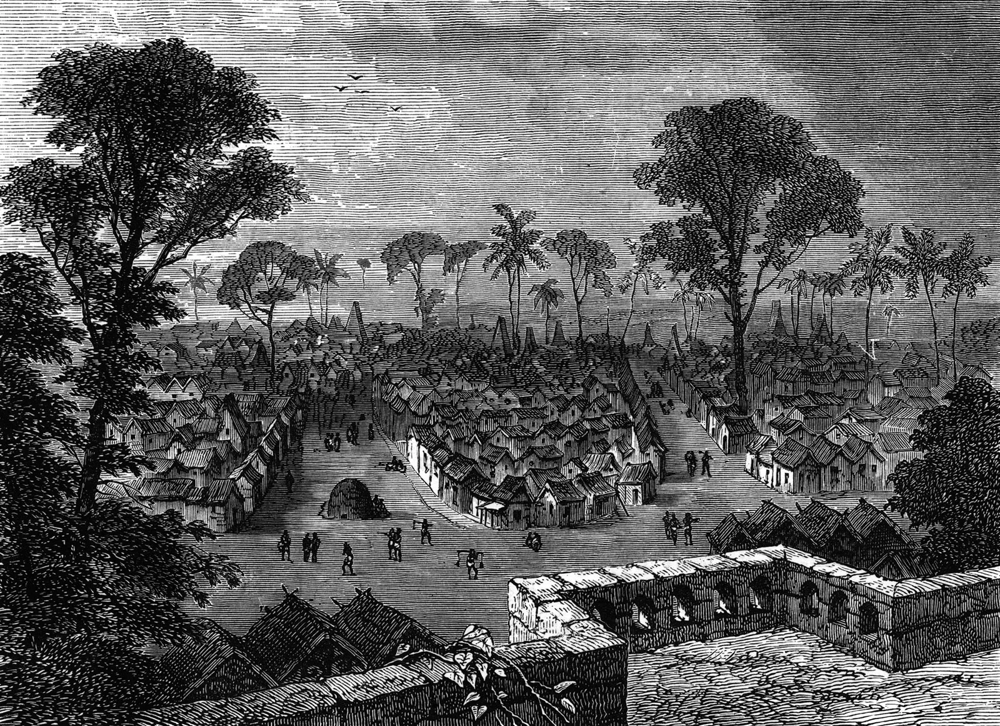
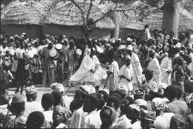

Ethnic Groups and Languages

Ghana is home to more than 70 ethnic groups, each with its unique traditions and languages. The major ethnic groups include:
(including the Ashanti and Fante people) Ewe Mole-Dagbani Ga-Adangbe Guan Dagomba While English is the official language, widely spoken across the country, indigenous languages such as Akan (Twi, Fante), Ewe, Ga, and Dagbani are widely used, especially in rural areas.
Music and Dance

Music and dance are essential parts of Ghanaian life, with various styles representing the country’s diverse cultural heritage. Traditional music involves instruments like the talking drum (atumpan), xylophone, and kora (a type of string instrument). Highlife: This genre emerged in the early 20th century, blending traditional rhythms with Western instruments like guitars and horns. Artists like E.T. Mensah popularized highlife, which remains a staple in Ghanaian music. Hiplife: A more contemporary genre, hiplife blends highlife with hip-hop and rap elements, and it’s extremely popular among younger generations. Artists like Reggie Rockstone and Sarkodie have had significant influence in this genre. Adowa and Kpanlogo: Traditional dances like the Adowa (Akan) and Kpanlogo (Ga) are important in ceremonies, festivals, and celebrations. Each dance has its own rhythms and symbolic movements.
Festivals

Festivals in Ghana are often colorful and full of energy, celebrating harvests, historical events, and spiritual beliefs. Some of the major festivals include: Homowo: Celebrated by the Ga people in Accra, it marks the end of a famine with music, dancing, and feasting. Aboakyir Festival: Celebrated by the Effutu people of Winneba, this festival involves a deer-hunting competition and is held to honor the gods of the land. Asafotufiam Festival: Celebrated by the Ada people, it commemorates past warriors and their victories. Akwasidae: This Ashanti festival honors the ancestors and kings of the Ashanti kingdom. It’s held every 42 days in the royal palace of Manhyia, Kumasi.